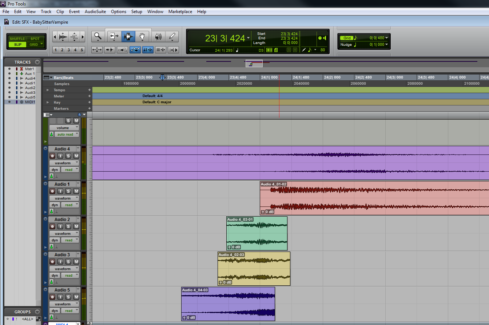

When you are designing sounds you should be playing
- Keep a playful mood
- Allow yourself to say "What would happen if?..."
- This is not solely a mental thing. Pay attention to your posture and environment
Keep Experimenting

- You will throw away / iterate on a lot of sounds
- Your first try will probably be a fail. Try again and fail better next time!
- You may be shocked at what sounds good in the game
LOOPING
- We want the sound to continue playing for some period of time.
- It's a way to save space in memory.
- You can use loops to give a space a feeling of rhythm.
- Watch for uneven percussive elements.
LAYERING

- Cooking - think about it like adding ingredients.
- Excellent ingredients in the right proportions
- More is not always better!
- Don't bury your lead with details